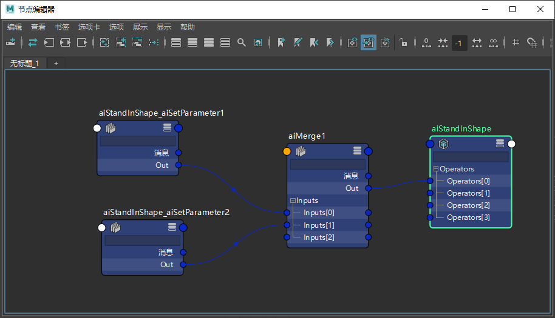

创建和导出外观
本教程介绍了如何创建第一个外观。
Alembic 至 Arnold 程序/替代对象 (.ass)
在开始之前，您需要将模型导出到 Alembic。然后，可以将该模型导入到 Arnold 程序/替代对象。
- 将原始文件（在本例中为机器人）导出到 Alembic：“Arnold -> 替代对象 -> 将当前选择导出到 Alembic...”(Arnold -> StandIn -> Export Selection to Alembic ...)
- 将机器人 Alembic .abc 文件（父页面上的链接）导入到替代对象。请注意，替代对象的“文件内容”(File Contents)窗口中的层次相同。
- 为场景提供照明并对其进行渲染。您应该会注意到，该对象没有指定材质并渲染为灰色。
指定着色器
- 现在，我们可以为不同的对象指定不同的着色器。
- 在“文件内容”(File Contents)中，单击“颜色 1”(Color 1)，然后单击“添加指定 > 着色器”(Add Assignment > shader)。这会将设置参数(Set Parameter)运算符自动连接到程序替代对象。在“节点编辑器”(Node Editor)中，单击“显示图形”(Show Graph)，或双击运算符列表中的“设置参数”(Set Parameter)。您可以在“运算符”(Operators)列表中看到“指定”(assignment)运算符（“运算符”(Operators)列表显示适用于“文件内容”(File Contents)列表中所选内容的运算符）。
在后台创建的“设置参数”(Set Parameter)运算符
- 创建一个 standard_surface 着色器并选择“镀铬”(Chrome)*预设。或者，将“金属度”(Metalness)增大到 1，将 *specular_roughness 设置为 0。
- 按住鼠标中键，将“镀铬”(Chrome)着色器从 Hypershade 拖动 Color1 组（“文件内容”(File Contents)）的“着色器”(Shader)窗口。
您应该会看到选择中的 Color1 组以及“设置参数”(Set Parameter)的“指定”(Assignment)中的“镀铬”(Chrome)着色器。

在“文件内容”(File Contents)*的 *Color1 组中，可以看到着色器指定。灰显的球体图标表示继承的指定（材质）。
- 使用黑色塑料着色器，对 Color2 组重复上述步骤。
- 渲染场景。材质指定应与此类似。
将运算符图表导出到磁盘
- 在“文件内容”(File Contents)中，选择“机器人”(Robot)（或 / ?），然后单击“显示图形”(Show Graph)。创建合并(Merge)运算符。我们将使用此节点作为目标节点以应用外观（其中外观是多个着色器指定的组合）。如下图所示，手动设置“合并”(Merge)运算符。
- 在“节点编辑器”(Node Editor)中，将“设置参数”(Set Parameter)*节点的 *OUT 重新连接到“合并”(Merge)运算符的“输入”(Inputs)。
或者，可以执行下列操作：
- 单击“添加运算符 > aiMerge”(Add Operator > aiMerge)，然后单击“显示图形”(Show Graph)。在“节点编辑器”(Node Editor)中，将 aiSetParameter 节点与 aiStandin_Shape 节点断开连接并连接到 aiMerge 输入。

- 将“合并”(Merge)运算符重命名为 default_look。
现在，我们将运算符图表导出到磁盘，以便可以建立默认的观察点。
- 选择“合并”(Merge)运算符（默认外观），然后转到“Arnold > 工具 > 导出运算符图表”(Arnold > Utilities > Export Operator Graph)。
- 选择名称和版本 (default_look) 及其保存位置。确保“导出指定的着色器”(Export Assigned Shaders)处于启用状态。
“导出指定的着色器”(Export Assigned Shaders)已启用
测试外观制作
现在，我们先测试一下到目前为止完成的工作，及其是否可以正常工作。
- 首先，创建一个新场景。
- 创建程序/替代对象并加载 Alembic 机器人角色。
- 创建一些灯光并渲染场景。您应该看到，还没有任何材质指定。
- 接下来，我们将通过 Alembic 文件加载材质和绑定（以及任何其他几何体特性）。
- 创建 IncludeGraph 运算符并将其连接到运算符 0 输入。也可以在用户界面中执行该操作。
- 在“替代对象属性编辑器”(Stand-in Attribute Editor)中，单击“添加运算符 > aiIncludeGraph”(Add Operator > aiIncludeGraph)。
- 您在“运算符”(Operator)列表中不会看到 IncludeGraph 运算符，因为它没有应用于特定对象。
- 单击“显示图形”(Show Graph)：已为您连接 IncludeGraph 运算符，您只需加载运算符图表。
- 在 IncludeGraph 运算符中，加载我们之前导出的默认 lookdev_v01.ass 运算符图表。
- 现在渲染场景。您应该会看到正在使用我们导出的外观对机器人进行着色。
在“包含图表”(Include Graph)运算符中加载 Lookdev_v01.ass
希望您可以看到，导出不同的外观制作文件以用于管理流程中的复杂场景是多么轻松。